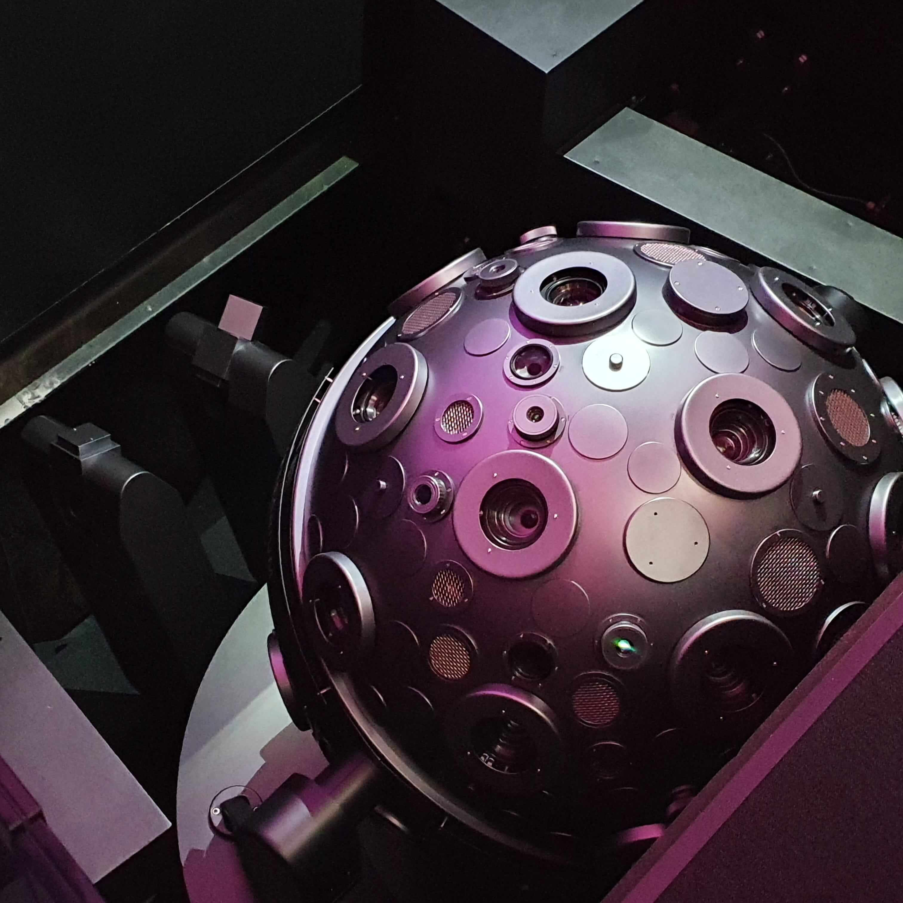

Die Sternfreunde Fritzlar sind in die
Gießener Straße 77 in Fritzlar umgezogen. Besuchen
Sie uns in unserem hochmodernen, nagelneuen Planetarium.
Auf unserer sechs Meter großen Kuppel präsentieren wir Ihnen ab sofort mithilfe unserer 360-Grad-Fulldome-Technik den Weltraum, wie Sie ihn noch nicht erlebt haben.
Reisen Sie mit uns zum Mond und zu fremden Planeten, wandeln Sie durch die Milchstraße und gehen Sie mit uns den großen Fragen nach:
Gibt es unbekanntes Leben im Universum?

Technische Ausstattung
Das Planetarium Fritzlar verfügt über neueste Technik und ein computergesteuertes Projektionssystem, das Sterne in erstaunlicher Schärfe zeigen und kosmische Weiten ganz nah heranholen kann.
Wir bieten 30 Plätze unter unserer sechs Meter großen Kuppel.